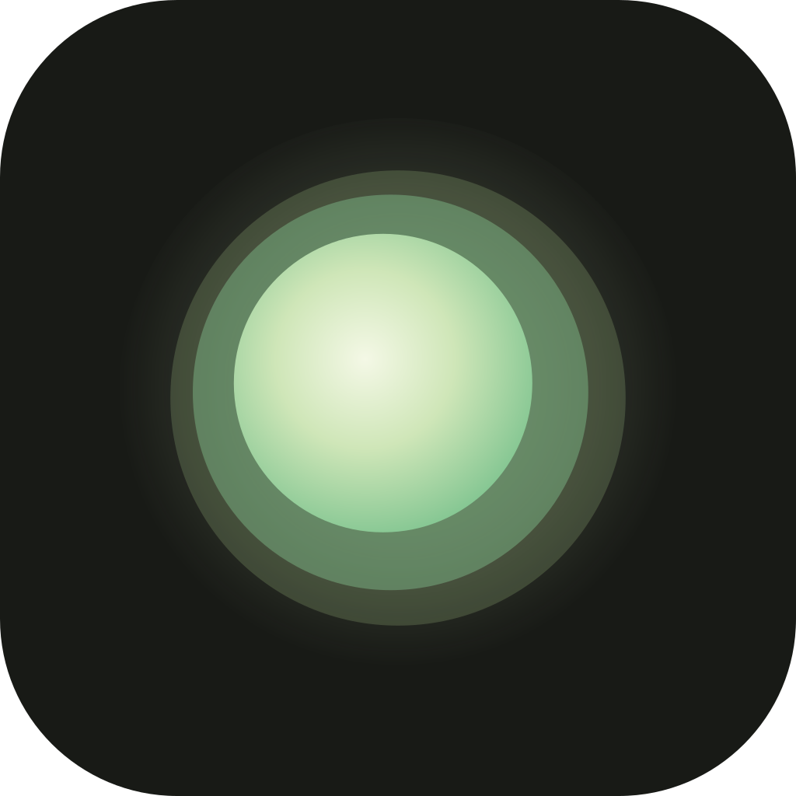

This is the companion to Haven Screens and Haven Components. Every value here is in tokens.css, the orb reference in Orb.dc.html, or the SVGs in assets/.
The rule is that nothing arrives faster than it would in a dim room. Only direct feedback uses --motion-fast. Everything that appears uses --ease-settle, which ends in a long tail, so elements land rather than stop.
The shape is now three translucent membranes (outer, middle, inner) around a lit core. Each membrane's edge is noise-displaced at its own phase, so the layers slide past each other like lamplight through linen. The keys match the current table. spread (how far the outer two membranes sit from the core) and levelGain (audio sensitivity) are new.
{{ h }}{{ c.v }}wordmark-twilight.svgwordmark-dawn.svg
app-icon.svgapp-icon-maskable.svgThe mark (logo-mark.svg and logo-mark-dawn.svg) is a still frame of the orb. The wordmark is live text in Instrument Serif Italic, so swapping the name means editing one string. Outline it before you ship it as a static file. The maskable icon keeps the mark inside the 80% safe zone. Icons (27) and weather glyphs (6) are in assets/icons/ and assets/weather/, use currentColor, and are drawn at a 1.6px stroke on a 24px grid. They're shown in Components.
Keep the lowercase serif-italic wordmark with the orb mark, whatever the name. Five candidates, all short, warm, and not clinical. None have been checked for trademarks or domains.
More character, but quiet: three layered membranes and an inner light. No particles, eyes, or faces. The layers are what read as "alive", because they drift out of phase like breathing. The inner core tells you the state at a glance: it dims and tightens while thinking, and warms and stills when concerned. In Dawn the layers are drawn normally rather than added as light, so the orb reads like sunlight on paper instead of a glowing ball.
Atmosphere, not illustration. Low-contrast gradient fields with fine particles: a few slow stars, haze blobs that drift sideways, hairline rain, and a horizon glow with faint rays for breaking. Sky colors stay close to the surface tones, so captions keep AA on every sky, and the ambient mesh sits on top. Tiles reuse the same renderer as a single static frame. Glyphs carry the label wherever the sky itself is too small to read.
Yes, off by default, in Settings → Conversations (shown in screen 15). There are three beds that loop with no audible seams: soft rain, room tone, and a low hum. Sound ducks −18 dB while either of you is speaking and fades in over 4s. It follows the weather only if the person chooses "Match my sky". It never plays during Breathe (that's the breath's space) or while the crisis panel is open.
No. The current 1080×1350 layout is too dense for Stories, so this is a separate layout. Stories crop about 250px top and bottom for UI, and the date line and wordmark sit inside that safe area. The sky and orb fill the top 40%, rendered from the person's actual weather and last tone. After that come the title, one quote, and the small next step. There's nothing else.
cardImage.ts, with the orb as one static frame from the shader.